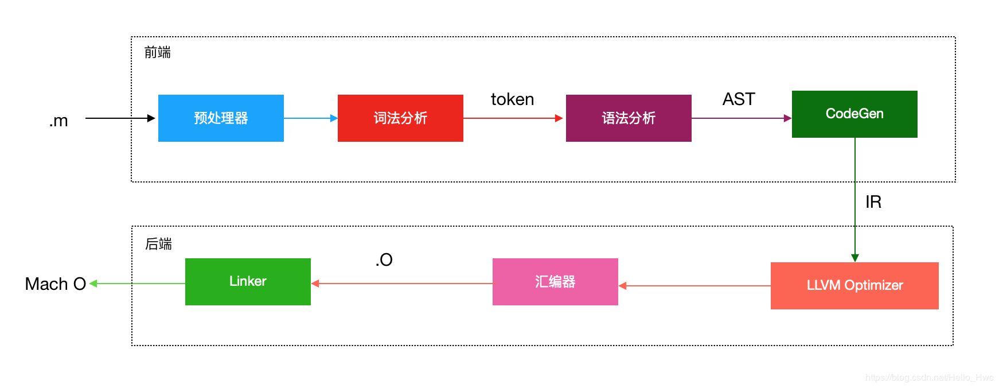

编译器
把一种编程语言(原始语言)转换为另一种编程语言(目标语言)的程序叫做编译器。
编译器一般由前端和后端两部分组成，前端负责词法分析、语法分析，生成中间代码。后端以中间代码作为输入，进行架构无关的优化，接着针对不同的架构生成不同的机器码。
前后端分离及通过中间代码(IR)协作的设计，使得前后端可以独立变化。新增一门语言只需要修改前端，而新增一个CPU架构只需要修改后端即可。
LLVM
什么是LLVM,他是一系列编译器组件和工具链的集合。引用维基百科的解释
LLVM包含一系列模块化的编译器组件和工具链，用来开发编译器前端和后端。现今LLVM已单纯成为一个品牌，适用于LLVM下的所有项目，包含LLVM中间码（LLVM IR）、LLVM调试工具、LLVM C++标准库等。
LLVM引发一些人来为许多语言开发新的编译器，其中一个最引发注意的就是Clang，它是一个新的编译器，同时支持C、Objective-C以及C++.
这里引出了我们的主角Clang。Object-c/c/c++编译器的前端就是Clang。以下是编译器编译的大致流程。

.m文件编译流程
本节将从代码层面跟踪一个文件的编译过程，文件名为main.c。代码如下:
#include <stdio.h>
#define IPhoneXBarHeight 88
#define DEBUG 1
int main() {
int barHeight = IPhoneXBarHeight;
#ifdef DEBUG
printf("hello debug\n");
#else
printf("hello world\n");
#endif
return 0;
}
预处理
预处理阶段会进行头文件引入替换、宏替换、注释处理、条件编译等操作。
用clang进行预处理
xcrun clang -E main.c
结果如下:
int main() {
int barHeight = 88;
printf("hello debug\n");
return 0;
}
stdio.h在预处理阶段会被替换成stido.h中的内容，这个过程是递归的，因为stdio.h也有可能引用了其他头文件。
在省略了几百行stdio.h的内容后，在末尾看到main函数预处理后只有3行。
IPhoneXBarHeight这个宏被替换成了具体的数字。
条件编译后，只留下了符合条件的printf("hello debug\n");
词法分析
词法分析器读入预处理后的字符流，将他们组织成有意义的词素(最小的意义单位)序列。对于每个词素，词法分析器产生词法单元(token)作为输出。
xcrun clang -fmodules -fsyntax-only -Xclang -dump-tokens main.c
结果如下:
annot_module_include '#include <s' Loc=<main.c:1:1>
int 'int' [StartOfLine] Loc=<main.c:5:1>
identifier 'main' [LeadingSpace] Loc=<main.c:5:5>
l_paren '(' Loc=<main.c:5:9>
r_paren ')' Loc=<main.c:5:10>
l_brace '{' [LeadingSpace] Loc=<main.c:5:12>
int 'int' [StartOfLine] [LeadingSpace] Loc=<main.c:7:5>
identifier 'barHeight' [LeadingSpace] Loc=<main.c:7:9>
...
identifier 'barHeight' [LeadingSpace] Loc=
语法分析
词法分析的Token流会被解析成一颗抽象语法树(AST).
xcrun clang -fsyntax-only -Xclang -ast-dump main.c | open -f
部分结果如下:
[0;34m`-[0m[0;1;32mFunctionDecl[0m[0;33m 0x7fbdbe8b5630[0m <[0;33mmain.c:5:1[0m, [0;33mline:14:1[0m> [0;33mline:5:5[0m[0;1;36m main[0m [0;32m'int ()'[0m
[0;34m `-[0m[0;1;35mCompoundStmt[0m[0;33m 0x7fbdbe8b58f8[0m <[0;33mcol:12[0m, [0;33mline:14:1[0m>
[0;34m |-[0m[0;1;35mDeclStmt[0m[0;33m 0x7fbdbe8b5768[0m <[0;33mline:7:5[0m, [0;33mcol:37[0m>
[0;34m | `-[0m[0;1;32mVarDecl[0m[0;33m 0x7fbdbe8b56e8[0m <[0;33mcol:5[0m, [0;33mline:2:26[0m> [0;33mline:7:9[0m[0;1;36m barHeight[0m [0;32m'int'[0m cinit
[0;34m | `-[0m[0;1;35mIntegerLiteral[0m[0;33m 0x7fbdbe8b5748[0m <[0;33mline:2:26[0m> [0;32m'int'[0m[0;36m[0m[0;36m[0m[0;1;36m 88[0m
有了抽象语法树，clang就可以对这个树进行分析，找出代码中的错误，如类型不匹配，调用了未声明的方法等。
CodeGen
CodeGen遍历语法树，生成LLVM IR代码。IR是前端的输出，后端的输入。
xcrun clang -S -emit-llvm main.c -o main.ll
部分结果如下:
@.str = private unnamed_addr constant [13 x i8] c"hello debug\0A\00", align 1
; Function Attrs: noinline nounwind optnone ssp uwtable
define i32 @main() #0 {
%1 = alloca i32, align 4
%2 = alloca i32, align 4
store i32 0, i32* %1, align 4
store i32 88, i32* %2, align 4
%3 = call i32 (i8*, ...) @printf(i8* getelementptr inbounds ([13 x i8], [13 x i8]* @.str, i32 0, i32 0))
ret i32 0
}
Objective-c代码会在这一步进行runtime的桥接:property合成，ARC处理等。
LLVM Optimizer
LLVM对IR进行优化后，会针对不同架构生成不同的目标代码，最后以汇编代码的格式输出。
xcrun clang -S main.c -o main.s
部分代码如下:
_main: ## @main
.cfi_startproc
## %bb.0:
pushq %rbp
.cfi_def_cfa_offset 16
.cfi_offset %rbp, -16
movq %rsp, %rbp
.cfi_def_cfa_register %rbp
subq $16, %rsp
movl $0, -4(%rbp)
movl $88, -8(%rbp)
leaq L_.str(%rip), %rdi
movb $0, %al
callq _printf
汇编器
汇编器以汇编代码作为输入，将汇编代码转换为机器代码，最后输出.o目标文件 。
xcrun clang -fmodules -c main.c -o main.o
生成了main.o文件后，我们可以通过如下命令查看其中的符号。
xcrun nm -nm main.o
结果如下:
(undefined) external _printf
0000000000000000 (__TEXT,__text) external _main
注意printf前的修饰。undefined表示在当前文件找不到符号。external表示这个符号是外部可以访问的。
链接
链接器把编译产生的.o文件和(a、tbd)文件一起生成mach-o可执行文件。可以看到,代码可以写在不同的文件里,每个文件都能够独立编成mach-o,最终链接器会将多个mach-o文件合并成一个，并创建一个全局符号表来记录所有已定义的和未定义的符号。
xcrun clang main.o -o main
执行后可以看到控制器会输出 "hello debug" 此时再查看可执行文件的符号表，
(undefined) external _printf (from libSystem)
(undefined) external dyld_stub_binder (from libSystem)
0000000100000000 (__TEXT,__text) [referenced dynamically] external __mh_execute_header
0000000100000f50 (__TEXT,__text) external _main
from libSystem表示这个符号来自于libSystem，会在运行时动态绑定。
mach-o就是编译阶段的最终产物。需要注意的是，静态库会在这个阶段被链接进mach-o文件,动态库在运行时才会被链接。